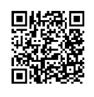

Knives, ferro rods, water filters—those are the loud parts of survival. The quiet part happens in your ribcage when no one’s watching: the covenant you make with your body. What am I going to put inside myself when life gets hard? For years my answer was booze. It felt normal because the world keeps handing it to you like a handshake. It also nearly killed me.
The Night They Read Me My Last Rites
I remember two things besides the pain: the taste of plastic from the oxygen tube and the priest looking at me with pity as if I had already passed. Stage 4 cirrhosis. There’s a way a room gets quiet when people think you’re not going to make it. The machines sound louder. Even the light looks clinical, like it’s already practicing for a morgue. They called my family. They prepared the prayers. I was supposed to go. It was all about comfort care at this point.
I didn’t die. But surviving isn’t the same thing as living. The first months after leaving the hospital were a strange punishment: insomnia that stretched four, five, sometimes seven nights; pain that felt poured into the joints; and an itch so deep and relentless I understood why some men go mad. I couldn’t scratch it out. I could only endure it.
I wasn’t a smoker. Didn’t have a plug. But something in me kept whispering, try cannabis. It wasn’t a party idea; it was a survival hunch. The first night I finally found some, I slept four hours in a row—my first real sleep in what felt like forever. The itch didn’t vanish; it changed character. The wildfire became an electric hum I could stand. The next morning I made eggs and actually wanted them. That was the first crack of daylight after a very long night.
I have bipolar disorder. Alcohol poured gasoline on my swings; cannabis often put a hand on the wheel. Some days it stopped a manic spike before it broke the sound barrier. Other days it just made me kinder—present enough to be a decent husband, friend, and father instead of a ghost with a pulse. That difference is not theoretical when you’re looking into your kid’s face.
Alcohol: The Poison We’re Sold
Alcohol is marketed as the social glue, the weekend reward, the flavor of patriotism. In a crisis it is dead weight. Even outside a crisis it taxes the very systems you need to survive: hydration, cognition, recovery, judgment, group trust. Ask any backcountry medic which calls they dread on holiday weekends—it’s not weed fights.
- Dehydration risk: Every ounce of water matters. Alcohol steals it. In hot weather or stress, that’s not a buzz; that’s a liability.
- Judgment tax: Survival runs on good choices. Alcohol blurs lines just when you need edges.
- Weight penalty: A 750ml bottle weighs ~1.5 lb (680 g). That’s a liter of water you didn’t carry, or a day’s worth of calories you left behind.
- Hangovers: Tomorrow’s fog is today’s decision coming due with interest.
- Long-term wreckage: I’m a walking caution sign—scar tissue that learned to talk.

Cannabis: The Survival Plant
People call it “the lesser evil.” That undersells it. For me, cannabis is a tool. Tools don’t solve every problem; they give you leverage where you had none. In the field, leverage looks like this:
1) Barter Value When Shelves Go Empty
Compact, instantly recognizable, divisible—cannabis behaves like silver in a moral economy. You don’t have to be a dealer to understand trade. When a neighbor needs sleep, appetite, or just a decent night beside a fire, a single pre-roll can move more goodwill than a six-pack ever will. In long emergencies, morale is currency. Share a joint, keep a friend. Keep a friend, keep perimeter.
2) Packability and Shelf Awareness
An ounce of flower is 28 grams. You can cushion it in a small mason jar, tuck it into odor-barrier bags, and it rides without clinking, sloshing, or leaking. Try that with glass bottles. Even a weekender kit can carry a few pre-rolls, a compact lighter, and a micro-grinder without losing space for water or medical supplies.
3) Pain & Inflammation—Enough to Move
Arthritis, old injuries, herniated discs—these are the quiet saboteurs that make otherwise strong people hesitate. Cannabis doesn’t make you bulletproof; it makes you able. When the pain dial turns down two clicks, you can lift the ruck, split a little wood, walk another mile. Ability stacks. Stacked ability is survival.
4) Caution Over Chaos
Alcohol loosens inhibition and pushes people into stupid. Cannabis tends to do the opposite: more awareness, slower mouth, narrower cone of risk. Around campfires, I’ve watched weed build conversation where whiskey would have lit arguments. The difference shows up at dawn.
5) Community, Not Combat
Pass a bottle and watch volume rise and the IQ level drop. Pass a joint and watch shoulders un-hunch. With the right people and the right dose, the fire gets warmer instead of hotter. That matters in families, in teams, and in any small group that has to keep choosing each other.


The Daily Battle (and Why I Keep Winning)
This isn’t a miracle tale. It’s a maintenance plan—like sharpening a blade or rotating water storage. Here’s what changed for me and how it holds:
Sleep: From Inverted Midnights to Natural Nights
Post-hospital, my nights ran upside down. Cannabis helped flip the switch. A large dose in the evening tells my body, stand down. Muscles unclench. Thoughts stop reenacting the worst moments of the day. On many nights it’s the difference between staring at the ceiling till 4 a.m. and waking up human at 6:30.
Appetite: Fuel Back in the System
Cirrhosis wrecked my hunger. Food became paperwork. Cannabis brought back a signal my body had lost. With calories and protein landing where they needed to, strength followed. It’s humbling how many problems fade when you can eat like a person again.
Pain: Edges Sanded, Not Disguised
Arthritis and herniated discs used to be the narrator of my day. Now they’re background noise. I still plan my lifts and mind my form, but I’m not bracing against every movement as if the world were made of hot wire.
Bipolar: Steering Wheel in My Hands
When the throttle starts to stick open, cannabis can put a governor on the engine. It doesn’t replace therapy, discipline, or faith. It gives them room to work. That room is precious to me and to the people I love.
Empathy, Patience, Presence
I’m not here to romanticize intoxication. I’m saying weed makes me more likely to pause—to listen to my wife, to let my kid finish a sentence, to step away from a fight that doesn’t need to happen. That alone has changed the climate of my home.
The Social Lie (and Why I’m Done With It)
I would have chosen cannabis over alcohol from the start if it weren’t illegal and socially shunned. Instead, alcohol was everywhere: at ball games, church picnics, hardware-store grand openings, the Tuesday of your life. Meanwhile cannabis came with a wink and a warning. The culture’s shaming didn’t match the outcomes. One made me aggressive, dehydrated, and reckless; the other made me calm, cautious, and capable. The math is not close.
So I’m done whispering. This isn’t about getting high; it’s about keeping a promise—to stay alive and stay the kind of man my family can count on. If that rattles someone’s marketing plan, so be it.
Field Notes: How I Actually Carry It
- Methods: A small pipe for home, pre-rolls for trips, gummies for when smoke isn’t appropriate. (Edibles take longer—know your timing.)
- Packing: Odor-proof bags inside a tin or mason jar. Lighter taped with a few winds of duct tape—two tools in one pocket.
- Dose: New to it? Start low, go slow. You can always add; you can’t un-add. Don’t drive. Don’t mix with alcohol. Lock it away from kids.
- Mindset: Treat it like a tool, not a mascot. You’re tuning your system, not escaping it.
The Source I Trust
I’ve used the same outfit for six years because they act like adults: discreet, punctual, professional. Odor-proof packaging, respectful service, and a clear letter referencing the 2018 Farm Bill so the box on your porch isn’t a gamble. You can find discount ounces under $70 most days; when you want top shelf, it’s actually worth the name. Flower, pre-rolls, concentrates, edibles—even shrooms. I’ve never had a package go missing or a question ignored.
Scan & Go
Around the Fire
I’ve sat by enough flames to watch two stories play out. In one, the bottle goes around. Voices rise; old grudges wake up; someone misreads a joke; someone storms off; morning arrives with apologies and headaches. In the other, a joint makes a slow circle. People talk about their kids, their fathers, their failures. Somebody admits they’re scared about money. Somebody else shares a trick for fixing a leaky tent seam. The embers get soft. You look up and feel human. At dawn, the camp is lighter—not just in weight, but in mood. Guess which world I want my children to inherit.
Choose Your Edge
Survival is not a TV show. It’s a stack of small, repeated choices: knife or no knife, filter or no filter, bottle or bud. The wrong stack ends in a hospital bed with a priest you never meant to meet. The right stack puts you on the trail with people who are glad you’re there. My choice is simple now: Bud over booze. It keeps me steady, useful, and kind. It helps me keep promises. That’s the whole job.
I’m sharing what helped me. I’m not your doctor, and this isn’t medical advice. Know your local laws. Keep your dosages sane, your stash secured, and your people safe.
FAQ
Is this legit? Am I going to have cops at my door?
It’s legit. Packages ship in odor-proof packaging with a letter referencing the 2018 Farm Bill. I’ve used the same source for six years without a single issue.
What about quality?
Discount ounces are often under $70, and top-shelf is worth the money. Flower, pre-rolls, concentrates, and edibles are consistent—no bait and switch.
Why choose cannabis over alcohol for survival?
Weed is lighter, trades better, doesn’t cause hangovers, and encourages caution over chaos. It helps with sleep, appetite, and pain—three pillars of staying sharp when it counts.